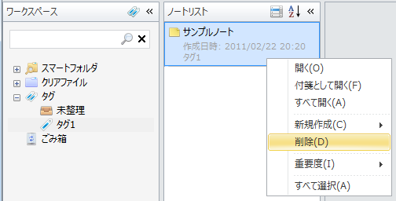
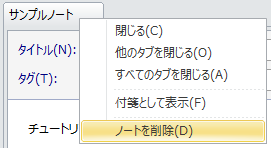
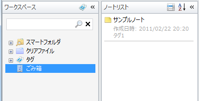
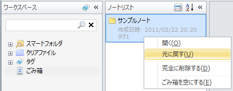
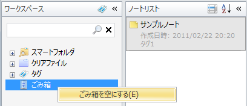

ノートを削除する
ノートリストペインで削除する
ノートを削除するにはノートリストペインでノートを選択してDeleteキーを押すか， 右クリックしてコンテキストメニューで「削除」を選択します。 選択されていたノートがごみ箱に入れられます。

ノートエディタのタブで削除する
ノートエディタのタブを右クリックしてコンテキストメニューで「ノートを削除」を選択して削除することもできます。 そのタブで表示していたノートはごみ箱に入れられます。

ごみ箱を表示する
削除したノートはごみ箱に入れられます。 ごみ箱に入れられたノートを表示するにはワークスペースペインで「ごみ箱」を選択します。 「ごみ箱」を選択するとノートリストペインにごみ箱に入れられたノートの一覧が表示されます。

ごみ箱から元に戻す
ノートリストペインでノートを右クリックしてコンテキストメニューから[元に戻す」を選択すると， ノートをごみ箱から復元できます。

ごみ箱を空にする
「ごみ箱」を右クリックしてコンテキストメニューで「ごみ箱を空にする」を選択すると， ごみ箱内のノートを完全に削除します。 完全に削除したノートは二度と復元できなくなります。
